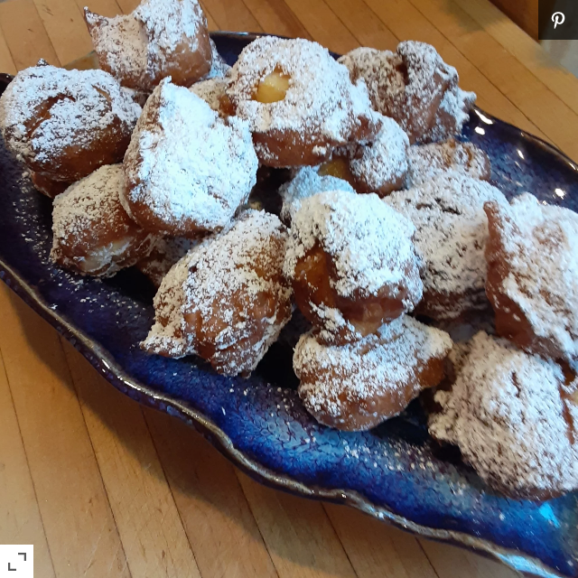

Olie Bollen

Description
This recipe was handed down to me by my mother. It is a Dutch
favorite on New Year's Day. I spent New Year's Day with my
in-laws for the first time and brought this tradition with
me. They were very impressed with this delicious doughnut-like
treat.
Ingredients
- 2(.25 ounce) packages active dry yeast
- 1/2 cup lukewarm water (110 degrees F to 115 degrees F)
- 4 1/2 cups all-purpose flour
- 1/4 cup white sugar
- 1 teaspoon salt
- 2 eggs, beaten
- 1 1/2 cups milk
- 1 1/2 cups chopped apple
- 1 cup raisins (optional)
- 1 quart vegetable oil for frying
- white sugar for decoration
Steps
Step 1
Warm oven on lowest possible temperature setting.Step 2
Dissolve the yeast in the warm water in a small mixing bowl. In a large
mixing bowl, combine flour, sugar, and salt. Add the eggs, yeast mixture, and milk;
beat with an electric mixer until blended.Step 3
Turn off the oven. Cover the prepared dough with a greased piece of plastic
wrap, and place the bowl of dough on the lowest rack of the warmed oven. Allow
to rest and rise for 1 hour.Step 4
Heat the oil for frying to 350 degrees F (175 degrees C) in a heavy bottomed, deep
skillet.Step 5
Mix the apples and raisins into the dough. Then, carefully slide the dough by heaping
teaspoons into the preheated oil. Do not crowd the pan. Fry the fritters until they
are golden brown, about 2 minutes per side. They should turn over on their own when
they are ready to brown on the other side, but keep an eye on them and flip them as
necessary. Remove them to a paper towel lined plate and repeat with the remaining dough.
Dust with sugar while warm.